A first-year design portfolio documenting how my understanding of
engineering design evolved through reflection, CTMFs, iteration,
and teamwork across multiple projects.
At the beginning of the course, I defined engineering design as
the act of intentionally creating and refining solutions to solve
specific needs while working under constraints, stakeholder needs,
and actual use. In that original statement, I focused heavily on
values like gratefulness, patience, and making decisions that I
could stand by without regret.
I still believe those values matter, but my understanding of
engineering design became much more grounded after actually
working through real projects with the CTMFs learned in Praxis I
and Praxis II. Revisiting my original video made me realize that
my first definition was a little too broad and generic. Working in
new teams and facing real design challenges pushed me away from a
simple idea of "working carefully within constraints" and toward
the discipline of choosing what to care about most when everything
cannot be optimized at once.
Engineering design is the process of making informed and justified
decisions to develop practical solutions, by moving between
analysis, iteration, and teamwork under constraints.
This portfolio brings together the projects and reflections that
helped shape that revised definition. The sections below cover the
CIV102 bridge project, the Praxis I Alpha Release design report,
and the Beta Release concept-development work, along with the
CTMFs that most influenced how I thought through each one.
Original Praxis II position statement referenced in the
introduction of the portfolio.
CIV Bridge Project
Team: Terry Fu, Declan Chan, Navneet SaxenaMaterial: 32" x 40" x 0.05" matboardTools: hand calculations, Python, SolidWorks, Opticutter
The first engineering design project I want to introduce is the
bridge project from the first-year cumulative assessment in EngSci. In
this project, my teammates Terry Fu, Declan Chan, Navneet Saxena, and
I had to design a bridge using a rectangular sheet of matboard
measuring 32" x 40" x 0.05", along with two tubes of contact cement.
Our process involved both analytical and physical work. We began with
structural analysis of an initial design and used hand calculations
and Python to generate the shear force, bending moment, and factor of
safety envelopes across the full span of the bridge. We also used
SolidWorks to model the geometry and Opticutter to optimize how the
pieces would be cut from the matboard.
We did not simply build one bridge and hope for the best. Instead, we
spent our own money to buy the same material the TAs gave us and
built a full prototype. Testing that prototype showed that the splice
failed first and that shear near the sides was causing buckling. That
evidence led to multiple design iterations, including changing
diaphragm placement, increasing the cross-section, and strengthening
the splice region. During testing, the prototype carried close to
1000 N before failure, which gave us valuable information before the
final build.
What I found most important about this project was not only that it
was one of the most hands-on experiences in CIV, but also how
iterative it truly was. The project taught me that engineering design
is not only about what appears most optimized in theory, but also
about what can actually be built well under real constraints of time,
materials, and the people available.
CIV Bridge figures
1 / 6
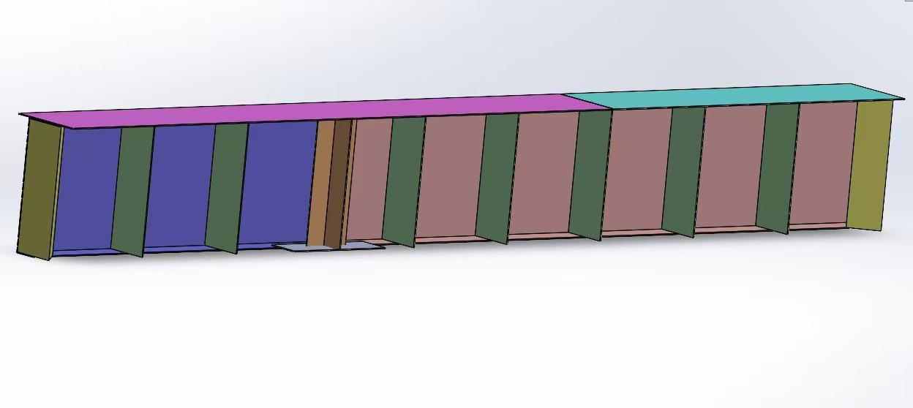
Figure 1: Inside view of the completed bridge. Yellow indicates
triangular diaphragms, green indicates vertical diaphragms, and
orange indicates the cross diaphragm.
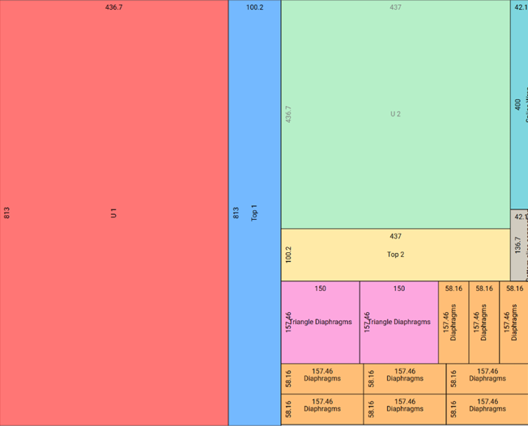
Figure 2: Opticutter layout used to optimize the matboard cutting
template.
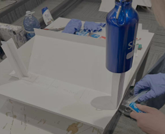
Bridge iteration work near the splice region during the
prototyping stage.
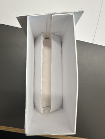
Figure 4: Inner view of the triangular diaphragms after
iteration.
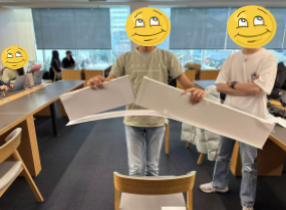
Figure 5: Failure of the prototype at the splice under nearly
1000 N of load.
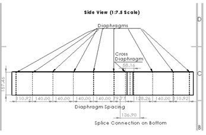
Figure 6: Side-view engineering sketch of the bridge design.
Arrow keys work when the gallery is focused. Click an image to zoom.
CTMF 1
NGO
Related FDCR: Framing, Diverging, Converging
Definition
NGO, or the Need, Goals, and Objectives table in Praxis terms, is a
tool that helps turn a design problem into something clearer and
more measurable.
NeedsWhat stakeholders require or care about.
GoalsBroad things the design should achieve.
ObjectivesSpecific measurable targets used to meet the goals.
What: Evidence of Use
NGO was one of the most important CTMFs during our framing,
diverging, and converging stages, even if we did not explicitly name
it that way while working. The bridge project was still driven by
the same logic: we had a clear goal, and every design change had to
be justified against it.
One objective was to increase the bridge's failure load while
reducing its vulnerability to buckling and splice failure. That
objective led us to increase the cross-section height, replace some
rectangular diaphragms with triangular supports where shear was
highest, widen the splice wrap, and add support near the splice
because those changes directly improved how the bridge resisted
bending, shear, and buckling.
So What: Lesson Learnt
The biggest lesson I took from NGO was that it kept me from drifting
toward random ideas or ideas that only felt intuitively correct. The
NGO framework kept the design anchored to something measurable and
helped prevent intuition-led decisions from taking over.
Now What: Future Action
In future design work, I want to use NGO more explicitly,
especially when I feel tempted to act too quickly on intuition. It
reminds me to ask what the actual objective is and whether a change
really helps move the design forward.
CTMF 2
Prototype
Related FDCR: Diverging, Converging, Representing
Definition
In Praxis, prototypes are described as models whose purpose is to
generate or communicate information about a design concept.
What: Evidence of Use
Our team did not build the prototype simply to show progress. We
built it to test how the actual bridge might fail. The prototype was
physically tested by loading it with two group members until
failure, creating nearly 1000 N of load. That testing showed that
the splice failed first and that shear near the sides was causing
buckling. The result directly informed later changes, including the
improved triangular diaphragms and stronger splice supports.
So/Now What: Lesson Learnt and Future Action
This prototyping step changed the way I think about failure.
Initially, I thought failed designs mostly reflected poor decision
making. This project showed me that failure can become one of the
most useful sources of evidence. It forced us to stop relying only
on analysis and pay attention to what the material and joints were
actually doing.
In future projects, I do not want to rely only on analysis.
Prototyping is something I want to keep using because it reduces
overconfidence and makes the design process more honest.
CTMF 3
Perry Model of Intellectual and Ethical Development
Related FDCR: All of FDCR
Definition
In Praxis terms, the Perry model describes how a person's thinking
develops when dealing with knowledge, uncertainty, and decision
making.
DualismYou think there is one right answer and one wrong answer.
MultiplicityYou begin to realize there can be multiple answers and perspectives.
RelativismAnswers need to be judged in context and with evidence.
CommitmentYou choose a direction to stand by while respecting other viewpoints.
What: Evidence of Use
The Perry model helped explain how my thinking changed during the
bridge project. At first, I had a more dualistic mindset and was
still looking for the "best" bridge design, almost as if there were
one correct answer and our job was simply to find it through theory
and calculation.
As the project progressed, the team moved through several versions
of diaphragms, cross-sections, and splice structures, and I started
to see that there was not one single right answer. Some ideas looked
stronger in analysis, like the variable-height trapezoidal
cross-section, but were harder to build accurately. Other ideas were
simpler and less optimized on paper, but much easier to build well
in reality. That pushed me toward relativism, where multiple
possibilities exist and must be judged in context.
So/Now What: What I Learned and Future Action
What I liked most about Perry's model is that it explains personal
growth rather than just something measurable. The bridge project did
not only teach me how to build a stronger structure. It also taught
me how to think more honestly, how to weigh evidence under
constraints, and how to commit to a direction without waiting for a
perfect answer.
Praxis I: Alpha Release Design
Problem: roommate sleep-study conflictRecommended concept: bed dome coverKey tools: Morph Chart, Pugh Chart, Proxy Testing
The second project in this portfolio is the design report and Alpha
Release design constructed during Praxis I: a bed dome cover for U of
T Chestnut Residence double rooms. The opportunity came from a very
everyday problem: two roommates sharing a room often have different
sleep and study schedules, so one person may need darkness to fall
asleep while the other still needs light to study.
In our design report, we reframed the opportunity so that the sleeping
roommate was treated as the primary stakeholder. We focused on
reducing light disturbance without making permanent changes to the room
or making the design difficult to use. Before converging on a final
design concept, we explored four ideas: the bed dome cover, lamp
covering, a retractable room divider, and a bathroom studying
extension.
Through multiple rounds of convergence, we recommended and constructed
the bed dome cover. We also identified key decisions behind that
recommendation, such as using polypropylene fabric to block light,
clamps to attach the cover without permanent damage, and a foldable
hinge mechanism to reduce effort and save space.
I included this project because it shows an earlier stage in how I
learned to connect stakeholder needs, divergence, convergence, and
prototyping with evidence. The project taught me that engineering
design is about knowing how to narrow concepts down in a way that is
evidence-based but still realistic.
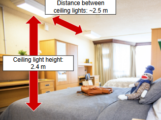
Figure 7.a: A double room at the U of T Chestnut Residence.
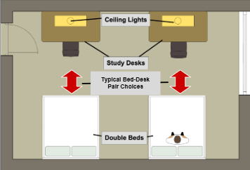
Figure 7.b: Simplified schematic of the double room showing the
positions of the lights, desks, and beds.
CTMF 1
Morphological Chart
Related FDCR: Framing, Diverging
Definition
A Morph Chart is a diverging tool used to generate ideas by
breaking a problem into its main functions and listing different
ways each function could be achieved. By combining options across
functions, it helps create a wider range of possible concepts.
What: Evidence of Use
In our initial diverging session, classical brainstorming gave us a
fairly limited design space, mainly lamp covers and room dividers.
It was only after using the morphological chart, and focusing on
functions like making the sleep area dark and making the solution
easy to maintain, that more creative concepts started to appear,
including a bathroom studying extension and night vision goggles.
What felt most useful about this CTMF was that it stopped us from
thinking only in terms of familiar products and pushed us to think
in terms of functions instead. For me, this was one of the clearest
moments where I understood why structured diverging tools matter.
Figure 9: Morphological chart from the second round of
divergence, featuring concepts such as night vision goggles,
sleeping under the bed, and a bathroom study extension.
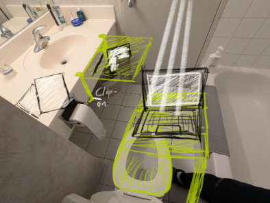
Figure 10: Bird's-eye view of the bathroom study extension
concept.
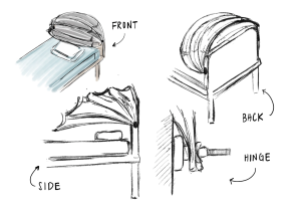
Figure 11: Sketch of the foldable bed dome cover with a wire
frame supporting a light-blocking fabric cover.
So/Now What: What I Learnt and Future Action
I learned that the Morph Chart fits me well because I can sometimes
settle too early on an idea that feels reasonable enough. This CTMF
worked against that habit and forced me to look at the problem more
structurally. In future projects, I want to use it deliberately
whenever a team begins converging too early or gets trapped by
anchoring bias.
CTMF 2
Pugh Chart
Related FDCR: Converging, Representing
Definition
In Praxis terms, a Pugh Chart is a converging tool used to evaluate
multiple concepts against a set of criteria by comparing each one to
a reference design.
What: Evidence of Use
By the time we reached this stage, the challenge was no longer
generating concepts. It was deciding which one we could actually
stand behind. We used both a Measurement Matrix and a Pugh Chart
using the bed dome cover as datum. The Measurement Matrix showed
that the bed dome cover reached 2.9 lux direct illuminance, 1.2 lux
indirect illuminance, a setup time of 3 to 5 seconds, and an
estimated weight of 920 g.
The bed dome cover did not dominate every category, but it performed
strongly overall. It stayed much lighter and more practical than the
retractable room divider while reducing light more effectively than
the lamp cover. The Pugh Chart made the project feel more
disciplined by structuring our judgment rather than letting us pick
the concept that only felt most convincing.
Table 1: Measurement Matrix copied from the design report
Concept
EC 1.1 Direct illuminance (lux)
EC 1.2 Indirect illuminance (lux)
EC 3.1 Setup time per use
EC 3.2 Weight
Bed Dome Cover
2.9
1.2
3 to 5 s
920 g
Lamp Cover
7
1.7
0 s
400 g
Room Divider
2.4
1.4
~5 s
4960 g
Bathroom Study Extension
0.5 maximum
0
~5 s
2700 g
Table 2: Pugh Chart with the Bed Dome Cover as datum
Evaluation criteria
Lamp Cover
Bed Dome Cover
Retractable Room Divider
Bathroom Study Extension
EC 1.1 Direct illuminance: the lower the better
-
Datum
+
+
EC 1.2 Indirect illuminance: the lower the better
-
Datum
-
+
EC 3.1 Setup time: the lower the better
+
Datum
-
-
EC 4.2 Weight: the lighter the better
+
Datum
-
-
Total
2+
0
2-
2-
EC 1.1 and EC 1.2 were treated as high-priority criteria because
they were most relevant to the sleeping roommate's expectations.
So What: What I Learnt
One useful lesson from the Pugh Chart was that it also helped
surface limitations. The bathroom studying extension ranked strongly
on some prioritized metrics, but its comfort was not properly
evaluated, which reduced how confidently it could be recommended.
The chart helped structure judgment, but it did not replace
judgment.
Now What: Future Action
This project showed me that I still need to get better at noticing
what is missing from a convergence tool, not only what is included.
In future projects, I want to keep checking whether apparently
strong evidence still leaves important gaps.
CTMF 3
Proxy Testing
Related FDCR: Converging, Representing
Definition
Proxy Testing in Praxis is a stand-in test that approximates real
conditions when an ideal test setup is not available.
What: Evidence of Use
During the process of selecting and constructing the recommended
design, we set up proxy tests that approximated the real situation
as closely as possible. We used a smartphone ambient light sensor
app in a darkened Chestnut double room and pointed the sensor from
the sleeper's head position toward the opposite ceiling light, the
ceiling above, and the nearest wall. That gave us a workable way to
compare direct and indirect illuminance across the selected
concepts.
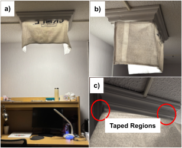
Figure 13: Front and side views of the flexible lamp-cover
prototype used for proxy testing, including the taped
attachment region.
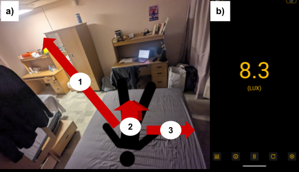
Figure 14: Testing setup for direct and indirect illuminance
measurements using the LightMeter app.
So What: What I Learnt
Proxy testing taught me that good design work does not always
require a perfect test method. What matters is building a test that
is reasonable, useful, and honest with the resources available. We
knew that professional tools such as integrating spheres or
goniophotometers were not realistically available in Praxis I, so we
created a proxy test instead.
Now What: Future Action
In future work, I want to keep using proxy testing whenever ideal
verification is unrealistic, but I also want to improve how I frame
those tests by asking what important behaviors might still be
missing.
Beta Release & Showcase Prototype and Design
Team 7: Grant Liang, Sean Ding, Nathan Xia, Junye ZhouRFP: variable swim resistanceFocus: concept development + meaningful representation
The last project I want to introduce is the Beta Release work for the
variable swim resistance RFP. This project connects strongly to my
current definition of engineering design as a process of making
informed decisions through analysis, iteration, testing, and teamwork
under real constraints.
What made this project different from the first two is that it sat in
a much more uncertain stage of engineering design. Unlike the Alpha
Release design report, where we were recommending one final design, we
were trying to show that we had credible concepts, represent them in
meaningful ways, and begin thinking more seriously about how they
would eventually be verified.
Team 7, consisting of me, Grant Liang, Sean Ding, and Nathan Xia,
developed four main concepts for Beta Release: a zipline capstan, a
parachute, a spool-based resistance system inspired by a rowing
machine, and a skirt-based water drag concept. These concepts were
represented at different levels of fidelity, from physical prototypes
and mathematical models to CAD and sketches.
This project helped me become more comfortable with uncertainty. It
showed me that being intentional does not always mean being certain.
In this stage of design, intention came from how we compared concepts,
justified why some deserved further development, and chose to
represent each one meaningfully even before final verification.
Biomimicry in Praxis is a diverging approach where you look at how
nature solves a problem and use that as inspiration for your own
design.
What: Evidence of Use
Biomimicry helped our team move beyond the most obvious resistance
ideas. Swim resistance equipment could easily have stayed limited to
familiar drag-based concepts, but this tool pushed us to think about
forms and mechanisms that already exist in nature and how they might
translate into movement in water.
We asked a simple question: how do animals in nature slow down in
water? That opened more possibilities than expected. We looked at
how fish extend pectoral fins to create drag, how jellyfish have a
parachute-like form, and how some animals reduce speed by stopping
active propulsion and entering passive glide. Those observations fed
directly into the parachute and skirt concepts.
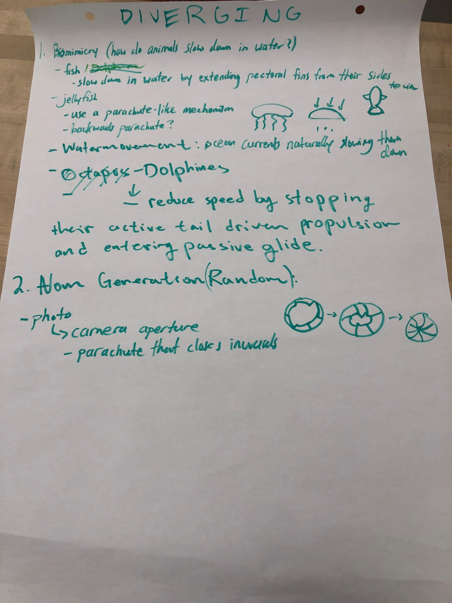
Figure 19: Biomimicry diverging work done during tutorial
sessions on paper.
So/Now What: What I Learnt and Future Action
Biomimicry fit me well because I sometimes need something concrete
to push my thinking in a less obvious direction. If I start only
from products that already exist, it is easy to stay too close to
the familiar. In future projects, I want to combine biomimicry with
other tools like the Morph Chart so that I can work from both
functions and natural movement patterns.
CTMF 2
Pairwise Comparison
Related FDCR: Converging, Representing
Definition
Pairwise comparison in Praxis is a converging tool used to evaluate
concepts by comparing them two at a time against a set of
requirements.
What: Evidence of Use
We initially had seven concepts. By debating them against one
another using Toulmin's model and grounding the comparisons in our
requirements and ECs, we removed three concepts because of issues
such as safety and functionality. Pairwise comparison made the
process feel more manageable because we could focus on one
comparison at a time instead of trying to rank all seven concepts at
once.
We chose pairwise comparison over a full Pugh Chart because the
Beta Release concepts were still at very different levels of
development. Some were more tangible and detailed, like the zipline
prototype, while others were still represented more conceptually,
like the skirt sketch. The pairwise format let us build clearer,
more defensible arguments at this stage.
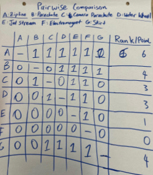
Figure 20: Pairwise comparison converging session completed on
paper.
So What: What I Learnt
Pairwise comparison allowed me to slow the process down in a useful
way. Rather than jumping too quickly toward the concept that looked
most polished or visually appealing, it gave us a structure for
smaller and more thoughtful arguments.
Now What: Future Action
In future projects, I would like to keep using pairwise comparison
while also pairing it with measurement matrices so that the
requirements and ECs stay clearer throughout the converging process.
CTMF 3
PIAA Model
Related FDCR: All of FDCR
Definition
PIAA is a model for decision making and design thinking that can be
summarized as perceiving a situation, interpreting its meaning,
assessing possible responses, and acting on a chosen direction.
PerceivingRecognizing the situation through observation and sensing.
InterpretingMaking meaning from what has been noticed.
AssessingWeighing possible responses and their consequences.
ActingChoosing and representing a direction.
What: Evidence of Use
During Beta Release, the PIAA model helped capture how our team
moved through an uncertain stage of design. We perceived that swim
resistance could come from several different mechanisms, interpreted
those observations into concepts like the zipline, parachute, spool
system, and skirt, assessed them through comparison tools like
pairwise comparison and Toulmin's model, and then acted by
representing each concept during Beta Release.
So What: What I Learnt
I learned from PIAA that good decisions do not happen all at once.
During Beta Release, I could see our team cycling through PIAA
repeatedly. This connected back to one of my original values:
patience. The model helped show that I can move through the process
step by step and let each stage shape the next one.
Now What: Future Action
In the future, I would like to use PIAA more intentionally, both in
engineering and in everyday decisions. I especially want to improve
at noticing whether I am still interpreting and assessing, or
whether I am rushing too quickly into action because progress feels
more visible there.
References
Junye Zhou. Process Analysis Student Submission. University of
Toronto course submission.
Junye Zhou, Declan Chan, Navneet Saxena, Terry Fu. CIV102 Bridge
Project Student Submission. University of Toronto course submission.
Junye Zhou, Jiaxu Zhao, Jocelyn, Audrey Lin. Design Report Student
Submission. University of Toronto course submission.
The University of Edinburgh. "What? So What? Now What?" Reflectors'
Toolkit.
University of Toronto. Alpha Release course material.
University of Toronto. Beta Release course material.
University of Toronto. Showcase course material.
University of Toronto. What, So What, Now What model for process
analysis.